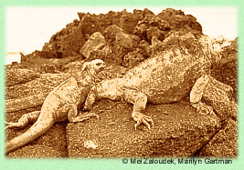

|
It has been 50 years since Charles Darwin graduated
from Cambridge University, where he studied theology. His radical theories
about the appearance and growth of life on earth have made him one of the
most controversial scientists of our time. In The Origin of
Species, published in 1859, Darwin presented his theory that
animals and plants evolved, or developed gradually,
from a few common ancestors by means of a process he calls natural
selection.
Darwin was not the first to suggest a theory of evolution. But his work has become the best known presentation of this idea, chiefly because of the well-developed nature of his arguments. Although his theory has set off bitter debate among scientists, religious leaders, and the general public, many scientists have supported his theories. Recently, the Cambridge Theological Society had the opportunity to speak with Darwin about his views.
Q. Let us begin with the most important question: Do you believe in God? Darwin: Yes, I do. I cannot conceive that this immense and wonderful universe, including man with his capacity to look far into the past and into the future, resulted from blind chance or necessity. I feel compelled to believe in a First Cause that has an intelligent mind in some degree similar to that of man. That First Cause is God. Evolution is merely God's tool. Q. Some have criticized you for saying that human beings were descended from monkeys. What do you have to say to your critics? Darwin: I would ask them to read my theories carefully. I believe that monkeys and humans are related through a single common ancestor, one who existed many, many thousands of years before the first humans. I have not said that human beings descended from monkeys. Q. When did the idea that animals and plants evolve first occur to you?

Darwin: During my voyage on H.M.S. Beagle,
from 1831 to 1836, I observed in South America fossils of extinct animals
that closely resembled modern species. Then, in the Galapagos Islands
in the Pacific Ocean, I noticed many variations in plants and animals
of the same general type found in South America. It was around 1838 that
I began to conclude that variations favorable to an environment tend to
be preserved in a species, and unfavorable ones tend to be destroyed.
The idea that animals and plants evolved from the same stock came some
time later.
Q. How, according to your theories, does evolution work? Darwin: It is my conclusion that those animals and plants that are best adapted to a particular environment are the ones that survive and reproduce. Over time, the species slowly adapts to changes in its environment. This is the main principle of an evolutionary process I call natural selection. Q. It has been about 22 years since you published The Origin of Species. How do you see that work now? Darwin: It is, no doubt, the chief work of my life, though I continue to develop my theories. It has been translated into almost every European tongue, and even Hebrew scholars have studied it and concluded that the Old Testament supports my theory. Q. How do you see your own place in the scientific community? Darwin: My success as a man of science has been determined, as far as I can judge, by many complex and different characteristics. Of these, the most important have been the love of science, unbounded patience in long reflecting over any subject, industry in observing and collecting facts, and a fair share of invention as well as of common sense. |
|